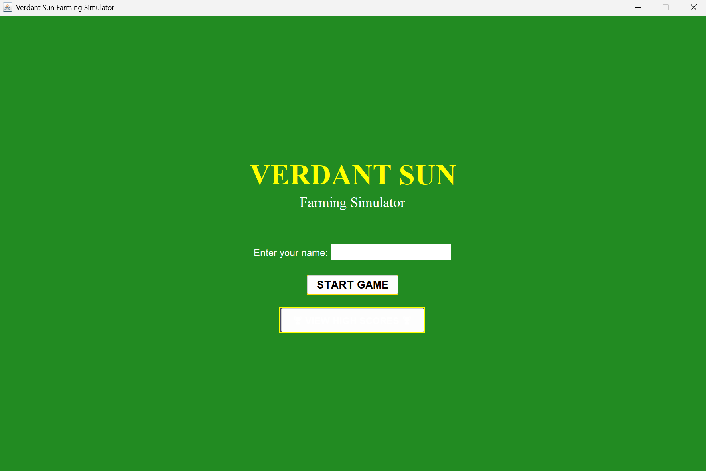
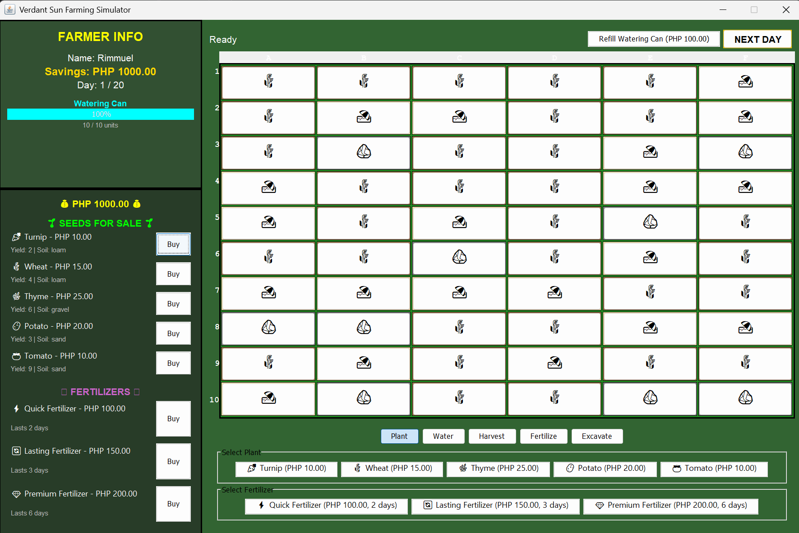
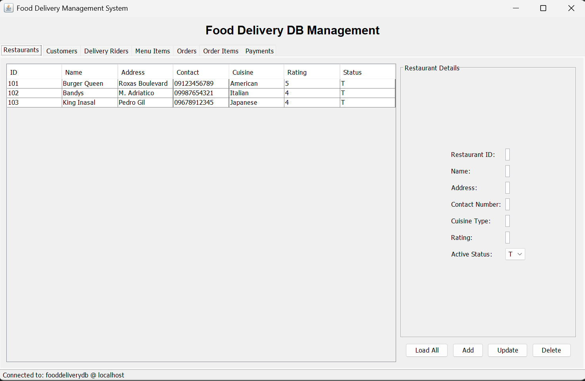
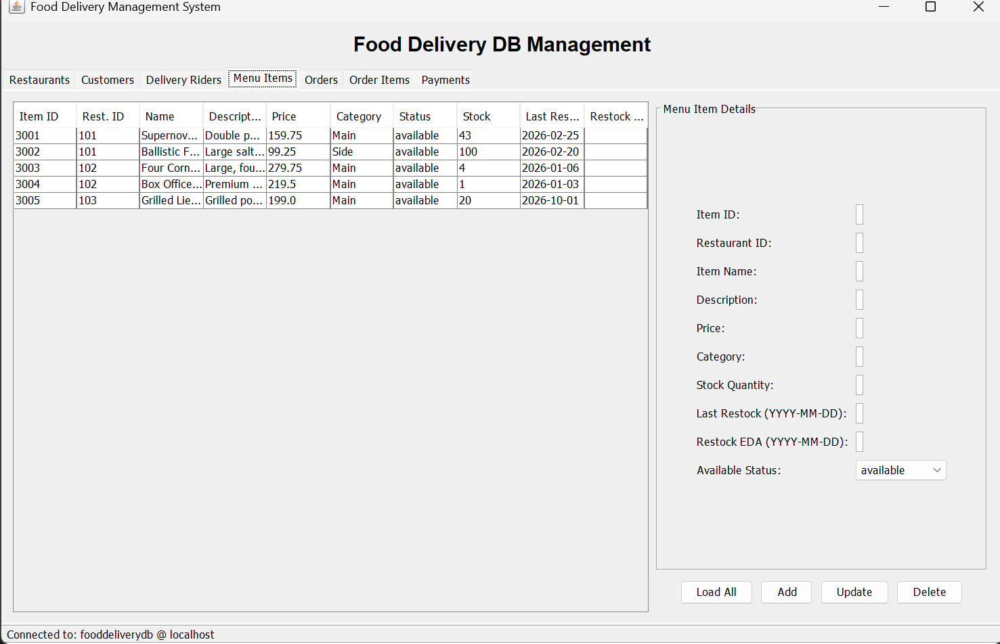

| My Homepage | Home | More | Projects |
Here lies the projects that I made from different
circumstances including personal works and School
projects.
| Verdant Sun Farming Simulator |


This is Verdant Sun Farming Simulator, it's a game made during CCPROG3. Its a turn-based farming simulation game where players take on the role of a farmer managing a 10x10 field of crops.
The goal is to maximize profits over a 20-day planting season by strategically planting, watering, fertilizing, and harvesting crops while responding to dynamic events like meteor strikes.
The game features a stage-based plant growth system where different plants progress through unique sequences of growth stages (Seedling, Dormant, Energizing, Low Productive,
High Productive, and Fully Mature), each with distinct behaviors affecting watering requirements, growth rates, and harvest yields.
| Food Delivery App |


This is the Food Delivery Management System, a Java-based desktop application developed for database management coursework. It's a CRUD system where administrators manage restaurants,
customers, riders, menu items, orders, and payments through a tabbed interface connected to a MySQL database.
The goal is to streamline food delivery operations by providing a centralized platform for adding, viewing, updating, and deleting records while maintaining data integrity through foreign key
relationships and input validation.
The system features seven interconnected modules with real-time table updates, comprehensive error handling, and support for complex operations like order tracking, payment processing,
and inventory management.
Would you like to know more about my projects?
Click the logo below to check my github